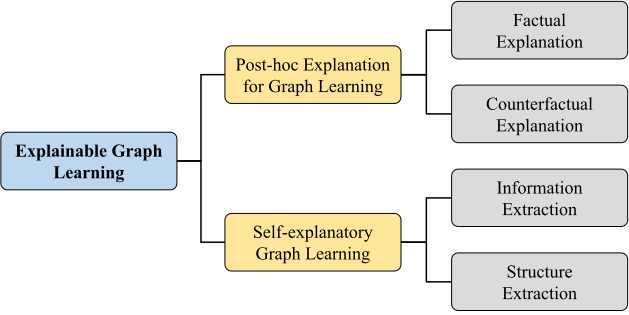
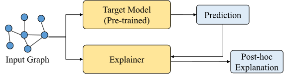
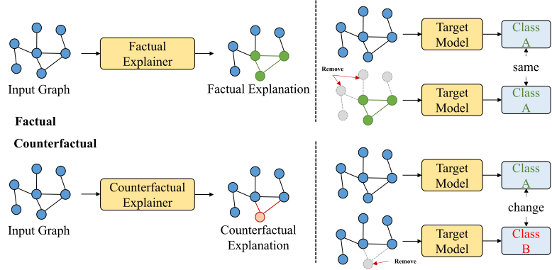
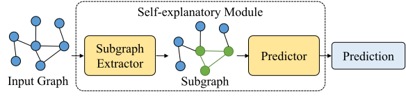
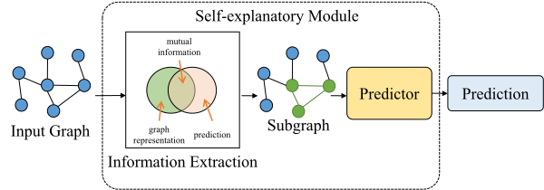
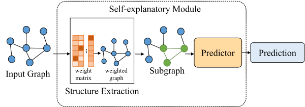

Explainable Graph Learning
Explainable Graph Learning
Despite the remarkable success of graph learning, the prevalence of graph neural networks in graph learning has led to the inherent “black box” issue of graph learning. Insufficient transparency of graph neural networks prevents end-users and model developers from understanding predictions and decision-making processes, leading to a crisis of trust between humans and models. This limits the possibility of deploying graph learning models into safety-critical scenarios such as healthcare, justice, and finance.
Providing explanations for graph learning models is an effective manner to enhance trust in their predictions. Consequently, explainable graph learning has received a lot of attention from the graph learning research community in recent years [5, 70, 71] and has been applied in various fields. Unlike explaining traditional deep learning models, there are challenges specific to explaining graph learning models. First, the topological information of graph data is complex. Its node features and topological relations impact on the prediction results are more difficult to be captured compared to structured data. Second, the predictions of graph neural networks contain higher-order dependencies. The multi-layer message aggregation mechanism of graph neural networks causes the representation of nodes to depend on the information of multi-hop neighbors, which raises the difficulty of explaining graph neural networks. As a result of these challenges, explainable graph learning has been a key research topic in the graph learning field, and numerous methods have been presented to improve the explainability of graph learning. To this end, we consider explainable graph learning as a branch of graph learning and provide a systematic survey of studies within this branch, thereby providing an updated overview.
In this survey, we categorize existing explainable graph learning methods into post-hoc explainable methods (explainers) and self-explanatory models (ante-hoc explainable methods). Post-hoc explainable methods explain the predictions of a graph learning model by constructing an explainer independent of the model, which explains the predictions without accessing the internal parameters of the model. For post-hoc explainable methods, we further divide them into factual explanation and counterfactual explanation based on the form of explanation. In contrast, self-explanatory models modify the architecture of the original graph learning model or introduce explainable modules to make the model itself “white-box”. For self-explanatory methods, we divide them into information extraction-based methods and structure extraction-based methods according to the manner in which they are implemented. Figure 6.1 illustrates the proposed taxonomy for explainable graph learning.

Post-hoc Explanation for Graph Learning
The aim of post-hoc explanation for graph learning is to explain the predictions of the graph learning model (target model) without modification. The post-hoc explanation is provided by a model-agnostic explainer, which defaults to the parameters of the target model being inaccessible. The generation process of the post-hoc explanation is shown in Figure 6.2. The explainer receives input samples and predictions from the target model to identify input topological information that significantly affects the prediction, and feeds this information back to the human as a post-hoc explanation.
Furthermore, we classify post-hoc explanations into two types: the factual explanation and the counterfactual explanation. As shown in Figure 6.3, the factual explanation focuses on capturing a subset of key topological information on the input graph that retains the predictions of the target model. In contrast, the counterfactual explanation focuses on capturing a minimal subset of topological information on the input graph that significantly changes the predictions.


Factual Explanation
The mainstream paradigm for generating factual explanations is to quantify the importance of edges and nodes on the input graph to the prediction and filter the important edges and nodes as explanations for the prediction. The manner in which an explainer quantifies importance can be categorized into three types: generative-based, search-based, and proxy-based.
Generative-based. Generative-based explainers typically utilize generative models to generate new graph explanations. The generative model learns representations of input graphs and constrains the maximization of mutual information between the graph representations and predictions to fit a probability distribution of the target model. Furthermore, the generative model reconstructs the explainable subgraphs based on the learned graph representations. Numerous existing explainers fall into this type. For instance, [321] utilized the variation in model loss caused by removing edges from the input graph to assess the causal effect of edges on predictions, which in turn guides the generation of explanatory subgraphs. In addition, some studies attempt to optimize graph editing strategies with reinforcement learning for guiding the generation of explanatory subgraphs. [322] utilized reinforcement learning to guide the editing of the input graph (removing or adding edges) for constraining the explainer to generate subgraphs that contain critical information. Similarly, [323] utilized reinforcement learning to guide the decoder for reconstructing explanatory subgraphs, and leverage a fully connected layer to capture the representation of the input graph. Besides reinforcement learning methods, some studies [324, 325] constrain the explanatory subgraphs to contain critical topological information by learning probabilistic generative graph distributions to approximate the spatial distance between the representation of the explanatory subgraph and the representation of the input graph. Despite the superior generalization and computational efficiency of generative explainers, subgraph generation processes are still black-box since they require learning the graph representation.
Search-based. In contrast to black-box generative explainers, search-based explainers identify the importance of edges and nodes in the input graph through a white-box search strategy without learning the representation of the input graph. For instance, some studies [326, 327, 328, 329, 330, 331] inject perturbations to each edge and node on the input graph for searching subgraph structures that significantly influence the prediction. The explainer measures the influence on predictions by perturbing different edges and nodes to capture important topological information. Inspired by the change rate of gradient representations, [332] measured the sensitivity of predictions to the change rate of gradient representations from topological information. Theoretically, predictions are sensitive to gradient changes in key topological information. Therefore, the explainer quantifies such sensitivity to capture the key explanatory subgraphs. In addition, some explainers [333, 334] decompose the predictions of the target model and back-propagate the decomposition values layer by layer up to the input layer. The input layer searches for a feature subset that critically influences the prediction according to the decomposition values.
Proxy-based. Proxy-based explainers aim to fit the target model with a white-box model as the proxy model. The white-box models employed by such explainers are typically linear, and they simulate predictions by fitting probability distributions of the target model. The explainer filters the key topological information by extracting the decision-making process of the white-box model.
Counterfactual Explanation
The purpose of the counterfactual explanation is to change the original prediction by minimally modifying the topological information of the input graph. There are two methods for generating the counterfactual explanation: optimization-based methods and learning-based methods.
Optimization-based. The optimization-based method identifies a subset of features in the topological space of the input graph by minimizing modifications to the graph features while maximizing the impact on the model prediction. This ensures that removing this subset from the input graph leads to a significant change in the model output. This method involves solving an optimization problem that maximizes the objective function, without the need to train a new model. For example, some methods modify edges and nodes by perturbing the adjacency matrix of the input graph and optimize the perturbation by minimizing the probability of the original prediction and the magnitude of the perturbation [335, 336, 337, 338]. Additionally, some methods aim to search the minimal subset of topological information within the topological space of the input graph that can alter the prediction [339, 340, 341]. While optimization-based methods are effective, their computational overhead is prohibitive, particularly for large-scale graph data tasks, which restricts their applicability in real-world scenarios.
Learning-based. Learning-based methods employ generative models to capture the feature distribution of input graphs and reconstruct counterfactual graphs that closely resemble the original. Given their ability to handle complex graph data, these methods offer excellent scalability and generalization. Consequently, numerous learning-based counterfactual explainers have been proposed. For instance, [342] proposed an unsupervised learning method to capture the decision boundaries of each category, thereby fitting a common decision logic for the target model across categories. By learning this decision logic, the explainer identifies subsets of edges that influence the prediction. These edge subsets are then removed from the input graph to generate counterfactual explanations. [343] utilized a graph variational auto-encoder to encode the input graph representation and reconstruct the graph representation into a counterfactual explainable graph.
Self-explanatory Graph Learning
Unlike post-hoc explainability methods, self-explanatory graph learning methods integrate a self-explanatory module directly within the graph learning model. The self-explanatory module actively participates in the model training process and autonomously generates explanations during inference.
As illustrated in Figure 6.4, self-explanatory graph learning proceeds in two stages. First, the self-explanatory module identifies and extracts key subgraphs within the input samples that are most influential to the model prediction. Second, the predictor utilizes these key subgraphs as input to produce the final prediction. These extracted subgraphs serve as intrinsic explanations for the model decision. Based on the methods of subgraph extraction, existing approaches for self-explanatory graph learning can be categorized into two types: information extraction and structural extraction.

Information Extraction

As shown in Figure 6.5, information extraction approaches typically use mutual information as a constraint to guide subgraph extraction. Specifically, self-explanatory methods based on information extraction aim to maximize the mutual information between subgraphs and the final prediction while minimizing it between subgraphs and the input graphs. These methods encourage subgraphs to discard irrelevant features from the original graph, retaining only those key features that significantly impact prediction. For example, [344] proposed a method namely GSAT (Graph Stochastic Attention) that uses a stochastic attention mechanism to calculate the variational upper bound for \(I(G,G_s)\), where \(G_s\) is an informative subgraph from the input graph \(G\). Similar to GSAT, LRI (Learnable Randomness Injection) [345] uses both Bernoulli and Gaussian distribution as the prior distribution. LRI separately calculates the existence and location importance of points to study how perturbing the location of the point will affect the predictions. [346] proposed a bi-level optimization method, which uses the Donsker-Vardhan KL representation to estimate \(I(G,G_s)\) in the inner loop and optimizes the GIB (Graph Information Bottleneck) objective in the outer loop. To improve the efficiency and stability of this bi-level training process, [347] proposed another method named VGIB (Variational Graph Information Bottleneck). VGIB uses a different compression technique by injecting noise into the node representations via a learned probability for each node, and the higher classification loss stands for the informative substructure injected with noise. Thus, the informative substructure is less likely to be injected with noise compared to label-irrelevant substructures. [348] proposed a self-explanatory model based on graph distribution matching, which reconstructs a new graph by matching the distributions of the original graph and the explanatory subgraph in its feature space during model training to capture the most informative subgraph. [349] proposed a prototype-based graph information bottleneck that uses prototype learning to capture key subgraphs in the input graph, which significantly influence the prediction, thereby enabling the prototypes to encapsulate richer key substructures.
Structure Extraction

Unlike information extraction, structure extraction focuses on constraining the topology of the graph instead of mutual information. As shown in Figure 6.6, structure extraction-based self-explanatory approaches directly constrain the topology in the input graph to identify key subgraphs that maximize the accuracy of the predictions made by the graph learning model. For example, [350] proposed to generate explanations by dividing the input into two parts: a causal component \((C)\) and a non-causal component \((S)\). The method is trained to minimize classification loss while ensuring that the prediction \(Y\) is conditionally independent of \(S\) given \(C\). This is accomplished by constructing several interventional distributions during training, where the features that remain stable across these interventions are identified as causal. The process begins by selecting the top-\(k\) edges from the input graph to form the causal portion, leaving the rest as non-causal. A distribution intervention module then perturbs the data to help uncover invariant causal patterns. Lastly, two classifiers are applied to produce a combined prediction based on both parts. [351] proposed a method, namely ProtoGNN (Prototype Graph Neural Network), that combines prototype learning [352] with GNNs. Instead of relying on post-hoc explanation techniques, ProtoGNN makes predictions by comparing input graphs to a set of learned prototypes in the latent space, and allows explanations to emerge directly from the case-based reasoning process. [353] introduced a method that identifies the \(k\) nearest labeled nodes based on both structural and feature similarities. These nearest neighbors are leveraged not only for making predictions but also for producing explanations. An explanation subgraph is constructed by selecting nodes whose importance exceeds a predefined threshold. [354] proposed KER-GNN (Kernel Graph Neural Networks), a framework that incorporates graph kernels into the GNN message-passing mechanism. In this approach, node representations are updated by measuring the similarity between each node’s local subgraph and a set of trainable hidden graph filters. These learnable filters capture key structural patterns within the data, and the resulting node embeddings can be further used to identify significant substructures for interpretation.